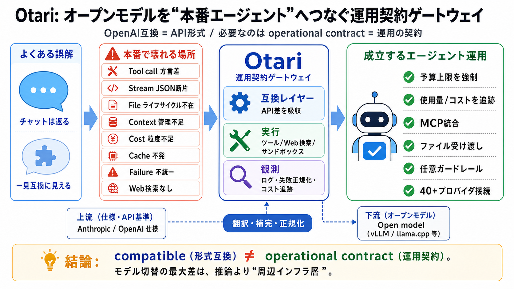

mozilla-ai/otari: Open-source, OpenAI-compatible LLM ...
Open-source, OpenAI-compatible LLM gateway you run yourself. One endpoint for 40+ providers, with virtual keys, budgets,…

Open model for agents
オープンモデルをエージェント製品に組み込むとき、欠けやすいのは「モデル性能」ではなく“運用の契約”です。そのギャップを埋めるゲートウェイがOtariです。
bilingual / 二言語要点: OpenAI互換は「API形式」寄り、必要なのは「エージェント運用の契約」。
壊れる場所
オープンモデルは動き始めるとチャットは返るため差が見えにくいですが、ツール呼び出しやストリーミング、実行・ファイル・観測の契約が揃っていないと破綻します。
最大の差
著者の経験では、モデル切替で最大の要因は「推論能力」よりも、モデル周辺のインフラ層（フォーマット、ライフサイクル、可観測性）です。
露呈する穴
オープンモデルへ切り替えた直後はチャットOKでも、次の要素が揃っていないと“埋め作業”が増えます。
誤解の修正
OpenAI-compatibleは「入力と出力の形式」までは寄せられても、「運用契約の同一性」までは保証しません。
bilingual / 二言語要点: “compatible（互換）” ≠ “operational contract（運用契約）”
構造的な負債
必要な機能が欠けるたびに、各アプリチームが個別に再実装します。その結果、オープンモデルに“半分だけ”フロンティア相当を移植した状態になります。
解決の形
Otariは、エージェントがAnthropic/OpenAI仕様で話しているときに、背後のオープンモデルへ同等の“プラットフォーム挙動”へ翻訳・補完し続けます。
束ねる要素
Otariは単なるプロキシではなく、ツール実行・Web検索・コンテキスト管理・可観測性（観測可能性）を一体化して“エージェント運用”を成立させます。
対応範囲
早期段階として、Chat Completions / Responses / Anthropic Messages など複数の生成サーフェスに対応し、40+プロバイダへ接続します。
運用の歯車
予算（課金上限）事前強制、キャッシュトークンを考慮した使用量/コスト追跡、Web検索やサンドボックス実行などを含みます。
bilingual / 二言語要点: “observable（観測可能）” な運用＝“debuggable（調査可能）” への近道。
安全と統合
サーバー側MCP、ローカルモデル向けファイルアップロード、任意ガードレールなども想定され、移行時の統合コストを下げます。
結論
Otariの方向性は「互換＝形式」ではなく「契約＝運用の成立」に焦点を当てています。導入前には性能・互換網羅・安全性の追加確認が必要ですが、必要性は高いです。
Open-source, OpenAI-compatible LLM gateway you run yourself. One endpoint for 40+ providers, with virtual keys, budgets,…
# Top 5 Open-Source LLM Gateways Compared (2026). **Compare the top 5 open-source LLM gateways for production AI in 2026…
# openai-compatible-api. audio pytorch speech-recognition chinese speech-to-text punctuation transcription asr speaker-d…
A versatile proxy server that enables tool/function calling capabilities across LLM providers and bridges the gap betwee…
| | | | --- | | Ollama now supports tool calling with popular models in local LLM (ollama.com) | | 81 points by thor-ro…